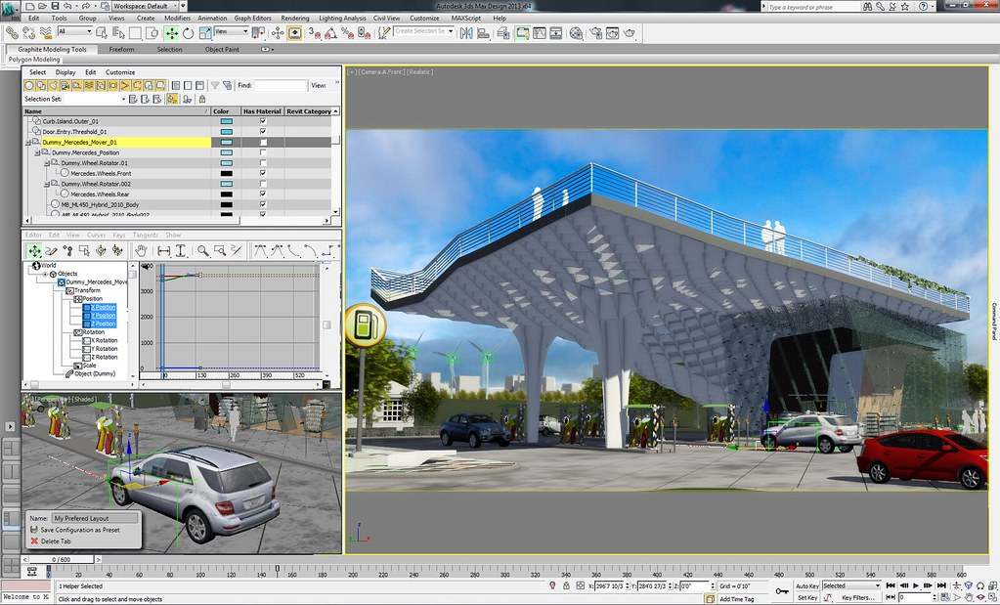

Examples of Possible Tasks
You are a civil engineer. Your client desires a cheap and structurally sound parking garage. To fulfill your task you decide on precast concrete for the parking garage because it is durable and allows for quick installation, exactly what the client wants. Using your digital design software you estimate the cost of the project and calculate the structural integrity of the proposed parking garage. Your client approves your proposal and construction begins, and you stay at the job site to oversee the process and help if problems arise.
If you choose to study civil engineering you’ll become familiar with this whole process and it will become trivial.
Long, but interesting video exploring the work of a civil engineer.
